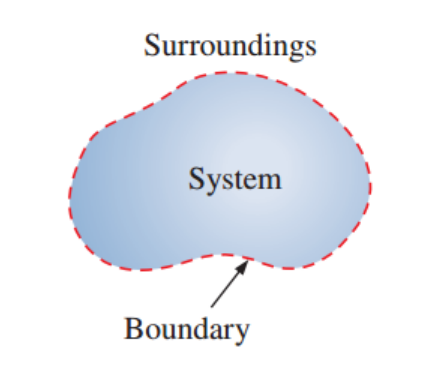
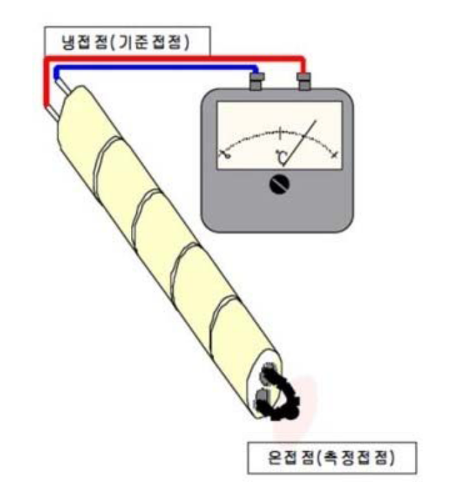

[Thermodynamics] Ch 1. Introduction
모든 책의 시작은 Intro
여기서 이제 배울 내용들을 위한 기본적인 개념을 다시 정리해보자.
1.1 가장 중요한 Control volume과 system
열역학적으로, 계산을 시작하기 위해 도구를 정의하였다.
그게 바로 SYstem.

우리는 분석하고 싶은 부분을 System으로 정의하고, Boundary를 통해
System에 들어오고 나가는 질량와 에너지를 분석하는게 열역학 학문자체의 목표이다.
[에너지교환은 Heat work이 두가지 뿐이라는 것]
여기서 만약에 에너지, 질량 교환이 없는 system이라면?
Isolated System
질량 교환은 없지만 에너지 출입만은 있다면?
Closed System
둘다 있다면?
Open system
자자 이제 유체역학 시간에 배운 Reynolds transport Theoerm을 떠올려 보자.
바로 Control volume이다.
Control volume은 어떤 matter이 흐를때 유동이 있을때,
그 부피영역 안에 들어오고 나가는 matter의 properties를 계산하기 위해
만들어 졌음.
![[Thermodynamics] Ch 1. Introduction](./images/img-002.png)
즉, Open system의 경우 흘러 들어오는 mass가 있기 때문에,
이 경우 우리는 설정한 System을 Control volume으로
해석 할 수 있다!
1.2 Properties and State of a substance
먼저, Phase(기체,고체,액체...)를 정의하자.
Phase는 어떤 homogeneous 한 quantity of matter라고 정의한다.
쉽게 생각하면, 영역안에 있는 모든 녀석들의 성질이 다 동일,균일 하다면,
Phase영역이라는 것이다.
그렇다면 Phase안의 입자들의 특징(온도,압력,밀도...)를
Properties
그리고 Properties가 같은 phase를 State라고 정의한다.
Property가 크기(부피)에 따라서 변하지 않는다면,
Intensive property
ex) T,P,density,specific volume
변하면
Extensive Property
ex) V,m,h,u,s...
다시 쉽게 이해해보자, State1은 특정 온도,압력,밀도 를 가지고 있고,
그리고 State2도 그만의 특정 온도,압력 밀도를 가지고 있다는 것.
결국 Path independent한 값 = State
![[Thermodynamics] Ch 1. Introduction](./images/img-003.png)
이제 다른 State로 이동하려면 어떻게 해야될까?
열을 가한다던지, 일을 받는다던지 특정한 과정을 거쳐야한다.
그 가정을 Path라고 정의한다.
자 하지만 여기서 핵심적인 부분이 있다.
위 그래프를 보면 path는 결국, 연속적으로 변하는 state의 집합이다.
그니까 저 경로그래프를 그릴려면, 과정속에 있는 모든 state를 알야아 한다는 말.
However,
밑 그림(b)처럼 빠른 속도로 피스톤을 압축한다면,
압축하는 과정속에서 당연히 모든 과정속에서 state를 알 수 없다. 왜???
저 피스톤에 압력계,온도계로 값을 빠른 속도로 구할 수 있는거 아니야??
기술좋으니까 짧은 시간에 어떻게 변하는지 다 구할 수 있지 않나?
ㄹㅏ고 생각이 들 수 도 있다.
![[Thermodynamics] Ch 1. Introduction](./images/img-004.png)
하지만, 그 과정속에 있는 모든 property값들이 state의 값이 아닐 것이다.
왜냐하면 equilibrium상태가 아니기 때문이다.
따라서, 우리는 열역학 책에서 나오는 모든 Process를
매우 느린, 아주 느린 과정이라고 정의한다.
그리고 그 과정을
Quasi-equilibrium process라 정의한다.
1.3 0th law of Thermodynamics
![[Thermodynamics] Ch 1. Introduction](./images/img-005.png)
우리는 상식적으로 시간이 지나면 저렇게 두 온도가 같아지는 것을 알 수 있다.
즉 copper, Iron 의 property(온도)가 바뀌었고, 새로운 State로 변한 것이다.
두 물체의 새로운 state에서 더이상 온도가 바뀌지 않는 상태를
Thermal equilibrium state
라고 정의하고,
모든 온도가 다른 물질이 만나면, Thermal equilibrium state로 전환된다는 것이.
0th Law of Thermodynamics
1.4 Temperature Scale
Celsius
0도 = 물의 Triple point
100도 = 1atm Steam point(물의 끓는점)
우리가 쓰고 있는 단위 SI Unit of temperature이다.
Fahrenheit
Fahrenheit scale에서는 이상하게 다음과 같이 정의하였다.
32F = 물의 삼중점 = 0도
212F = Steam point = 100도
참 신기하게 이렇게 한 이유는 사람의 체온이 96F,
소금물의 1atm온도가 0도 라고 한다.
Kelvin
정말 많이 쓰이는 Kelvin 는 다음과 같이 정의한다.
Kelvin 온도 = 섭씨 온도 + 273.15
자 열역학 제 2법칙에 따르면, 온도가 높은곳에서 낮은곳으로 무조건
process는 자연적으로 진행된다는 것을 ch5에서 배울 것이다.
그렇다면, 제일 낮은 온도는 어딜까? 즉, process가 진행할수 없을 만큼 낮은 온도는 어딜까??
그 기준점을 바로 0Kelvin이라 정의하였다.
결국, 이 온도는 열전달이 일어날 수 없는 상태, 분자의 운동이 없는 상태이다.
1.5 Energy
열역학적 성질을 분석하기 위해서 , System을 정의하였고
Surrounding으로부터 질량과 에너지가 교환된다고 위에서 언급 하였다.
시스템이 가지고 있는 에너지에 대해서 한번 조금 깊게 이해해보자.
시스템이 가지고 있는 총 에너지는,
Total E = u + KE + PE
u: 내부에너지
KE: 운동에너지
PE: 퍼텐셜 에너지
그리고 내부에너지는 세부적으로, 다음과 같이 표현된다.
u = u_ext molecule + u_translation + u_int molecule
첫번재 term,
u_ext molecule
은
분자간의 거리에 따른 상호작용을 의미한다.
따라서, 고체>액체>기체 순서대로 u_ext molecule은 크다.
가장 중요한 것은, Ideal gas assumption
= 분자간의 상호작용을 무시
-> u_ext molecule = 0
두번째, u_translation은
단순히 분자의 직선운동 즉, 속도와 질량과 비례한다.
마지막 term,은 u_int molecule
분자 내부, 그 자체 에너지
: 진동,회전,원자 에너지를 함축하고 있다.
이상 기체의 경우, 내부에너지 는 온도 하고만 dependent하다.
1.6 Measurement device.
가장 중요한 Property는 온도,압력,속도 이다.
그렇다면, 이 들을 어떻게 측정할까??
a) 온도 - Thermocouple

위 그림에서 온접점에 온도를 재고싶은 곳과 접촉을 시키면,
열은 원기둥 안에 있는 두가지 종류의 금속을 따라서 이동한다. (서로 접촉 x)
자 두 금속의 성질에 따라서, 반대편의 온도가 냉접점으로 같음에도 불구하고,
열의 흐름이 두 금속 끝단에 서로 다른 전기적 potential을 형성한다.(톰슨효과)
그리고 그 냉접점들을 이어주면, potential이 다르기 때문에, 전류가 흐르는 일이 발생한다.
따라서 기전력을 측정하면 -> 온도차이를 측정할 수 있다.
하지만 우리는 냉접점에서의 온도(상온)을 이미 알고 있기 때문에, 온접점의 온도를 구할 수 있다.
a) 온도 - Thermistor.
![[Thermodynamics] Ch 1. Introduction](./images/img-007.jpg)
사실 원리는 Thermocouple보다 굉장히 간단하다.
온도변화 -> Thermistor(반도체) 저항 변화
![[Thermodynamics] Ch 1. Introduction](./images/img-008.gif)
따라서, 위의 웨스톤 브릿지를 이용하여 R1에 Thermistor을 장착했다고 해보자.
R1이 변화하면, C-D의 전압 Vout도 변화할 것이다.
우리는 이 변화를 역으로 온도변화로 스케일링하여
온도가 어떻게 바뀌었는지를 측정한다.
b) 압력 - 수은 기압계
![[Thermodynamics] Ch 1. Introduction](./images/img-009.jpg)
아마 중학교나 고등학교때 무조건 들어 봤을 것이다.
압력에 따라서 수은의 높이가 달라지기 때문에 역으로,
높이 변화 -> 압력변화를 관찰 할 수 있다
b) 압력 - Aneroid 기압계
![[Thermodynamics] Ch 1. Introduction](./images/img-010.png)
공기의 압력에 따라서, Vacuum chamber이 팽창하고 수축한다. 그에 따라 lever의
높낮이가 변화하고 결국 spindle이 회전하게 된다.
사실 압력계는 굉장히 많은 종류가 있다....
요즘 많이 쓰는 디지털 압력계는
Piezoelectric material을 이용하는 압력계가 많다.
압력을 가하면 전자가 이동하는 물질.